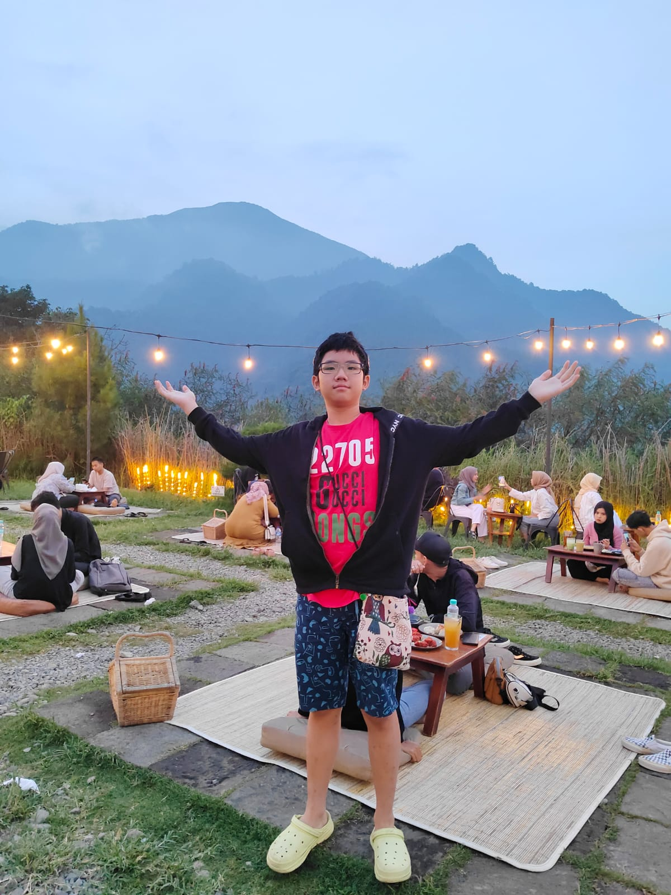
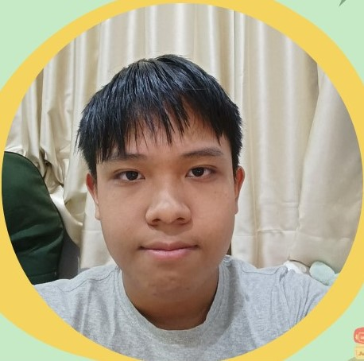

Anggota

Anggota 1

Anggota 2
Anggota 3
Konsultasi


Jejak Kita, Luka Alam: Menahan Laju Eksploitasi SDA dengan Hidup Berkelanjutan menggambarkan bahwa setiap tindakan manusia terhadap alam selalu meninggalkan jejak yang dapat berubah menjadi “luka” berupa kerusakan hutan, pencemaran, dan terganggunya ekosistem. Namun, judul ini juga menegaskan bahwa kerusakan dapat dihentikan jika manusia memilih hidup yang lebih berkelanjutan. Kita yang membuat jejak, dan kita pula yang dapat memulihkan bumi.